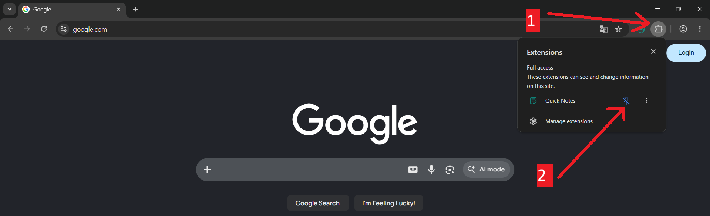
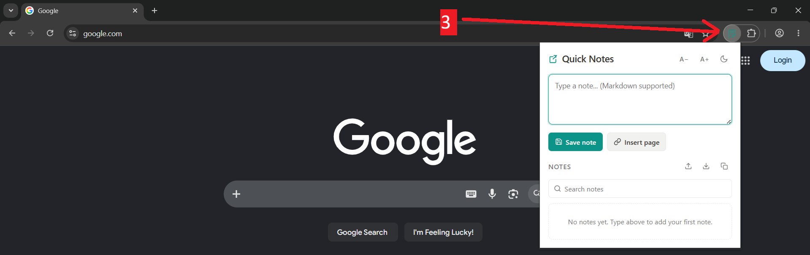

You’re all set!
One last step. Pin Quick Notes so it’s always one click away.

Pin the icon to your toolbar
- Click the puzzle icon in your browser bar.
- Click the pin next to Quick Notes.

Open your notes any time
- Click the pinned icon, or press Alt + Q (Ctrl + Q on macOS), to open Quick Notes from any page.